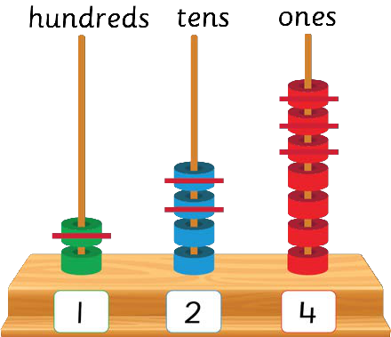

Or
247 − 123 =

Therefore, 247 − 123 = 124
Exercise 1
Write the answer in each question.
1.299 − 133 =
2.795 − 275 =
3.444 − 200 =
4.568 − 346 =
5.306 − 204 =
6.597 − 50 =
7.980 − 440 =
8.600 − 300 =
9.649 − 48 =
10.937 − 415 =
11.935 − 213 =
12.528 − 417 =
13.438 − 216 =
14.287 − 240 =
15.386 − 215 =
16.756 − 524 =
17.368 − 118 =
18.999 − 439 =
59
59 Or 247 – 123 = Therefore, 247 – 123 = 124 Exercise 1 Write the answer in each question. 1. 299 – 133 = 10. 937 – 415 = 2. 795 – 275 = 11. 935 – 213 = 3. 444 – 200 = 12. 528 – 417 = 4. 568 – 346 = 13. 438 – 216 = 5. 306 – 204 = 14. 287 – 240 = 6. 597 – 50 = 15. 386 – 215 = 7. 980 – 440 = 16. 756 – 524 = 8. 600 – 300 = 17. 368 – 118 = 9. 649 – 48 = 18. 999 – 439 = hundreds tens ones ARITHMETICS PUPIL'S STD 2.indd 59 06/11/2024 17:23 Or. 247 minus 123 equals. The abacus has columns for hundreds, tens and ones. Crossed beads show the amount subtracted. 1 bead remains in the hundreds column, 2 beads remain in the tens column, and 4 beads remain in the ones column. Therefore, 247 minus 123 equals 124. Exercise 1. Write the answer in each question. Question 1. 299 minus 133 equals. Question 2. 795 minus 275 equals. Question 3. 444 minus 200 equals. Question 4. 568 minus 346 equals. Question 5. 306 minus 204 equals. Question 6. 597 minus 50 equals. Question 7. 980 minus 440 equals. Question 8. 600 minus 300 equals. Question 9. 649 minus 48 equals. Question 10. 937 minus 415 equals. Question 11. 935 minus 213 equals. Question 12. 528 minus 417 equals. Question 13. 438 minus 216 equals. Question 14. 287 minus 240 equals. Question 15. 386 minus 215 equals. Question 16. 756 minus 524 equals. Question 17. 368 minus 118 equals. Question 18. 999 minus 439 equals. End of page.